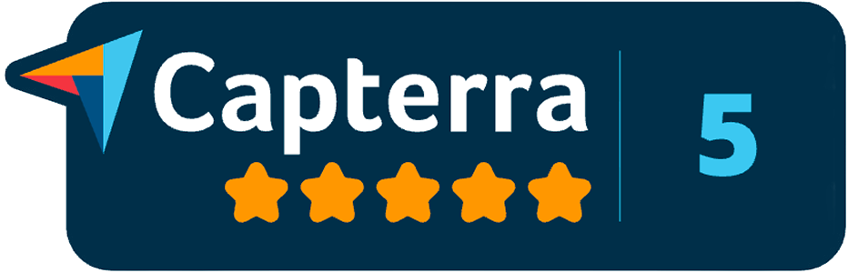
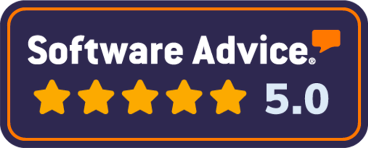
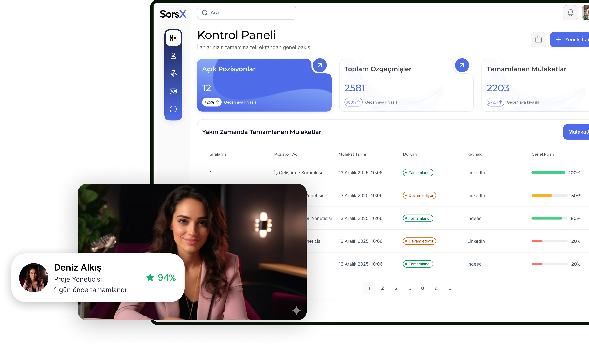
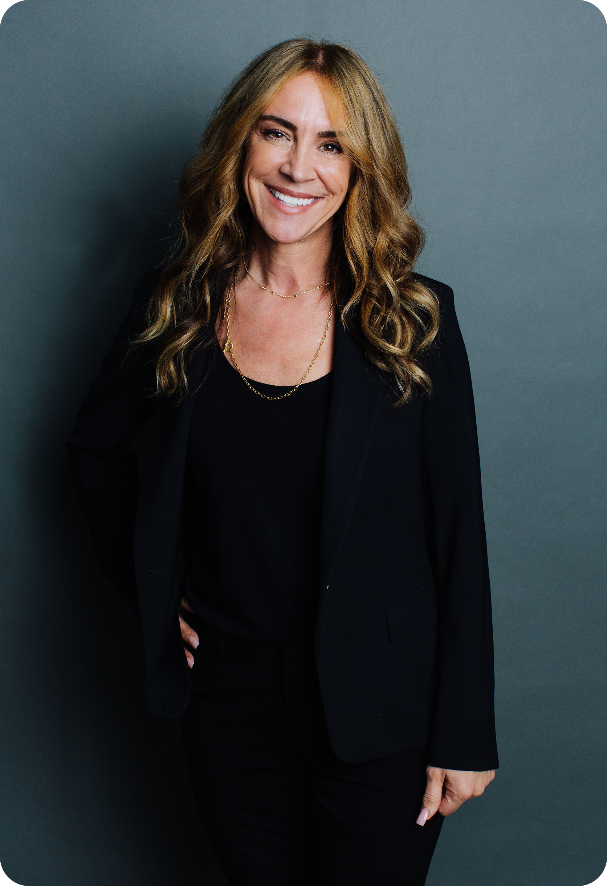

Dünya genelinde ekiplerin güvendiği İşe Alım Platformu.
İnsan kaynakları liderleri ve yetenek kazanımı ekipleri, yapay zeka destekli işe alım platformumuz ve AI mülakat çözümlerimizle işe alımı nasıl dönüştürüyor?
SorsX, mevcut işe alım süreçlerinize entegre olan bir yapay zeka işe alım ve mülakat platformudur. Aday bulma, ön eleme ve yapay zeka destekli video mülakatları otomatikleştirir; ekibinizin yalnızca en doğru adaylara odaklanmasını sağlar.



Yapay zeka destekli işe alım, otomasyon ve makine öğrenimini kullanarak işe alım ekiplerinin aday bulma, başvuruları ön elemeden geçirme ve yapılandırılmış mülakatları daha hızlı ve tutarlı şekilde yürütmesine yardımcı olur. SorsX; yapay zeka ile işe alım, mülakat yazılımı ve yetenek analitiğini bir araya getirerek, kaliteden ödün vermeden işe alım süreçlerini ölçeklendirmenizi sağlar.

SorsX, otonom aday bulma, yapay zeka destekli mülakat ve video mülakat çözümlerini yetenek analitiğiyle tek bir platformda buluşturarak modern insan kaynakları ve işe alım ekiplerinin daha akıllı işe alım yapmasını sağlar.
Pasif yetenekler için otonom AI işe alım ajanları
Başvuran her aday için AI işe alım yazılımı
Her rol, her yer için AI video mülakat yazılımı
İşe alım ekosisteminiz için sohbet tabanlı yetenek analitiği
İnsan kaynakları liderleri ve yetenek kazanımı ekipleri, yapay zeka destekli işe alım platformumuz ve AI mülakat çözümlerimizle işe alımı nasıl dönüştürüyor?

Ön eleme ve ilk mülakat süreçlerini ciddi şekilde hızlandıran gerçek bir “oyun değiştirici” oldu. Bilinçli kararlar almamız için tam olarak ihtiyacımız olan içgörüleri sağlıyor.
SorsX, yapay zeka destekli işe alım ile ön eleme ve AI mülakat süreçlerini otomatikleştirdi; işe alımı hızlandırırken yapılandırılmış ve savunulabilir işe alım kararlarını güçlendirdi.
Restoranlarımız genelinde SorsX’in yapay zeka destekli işe alım çözümleri, yüksek hacimli işe alımı AI mülakatlarla kolaylaştırarak yöneticilere müşterilere daha fazla zaman ayırma imkânı sağladı.
SorsX’in AI işe alım yazılımı, ön eleme ve AI video mülakat süreçlerini otomatikleştirerek standartlaştırılmış değerlendirmeler ve hızlıca karar almaya hazır kısa listeler sundu.
SorsX, yapay zeka destekli işe alım ve mülakat çözümlerini ölçülebilir iş etkisine dönüştürür; işe alımcıların zamanını geri kazandırır, araç karmaşasını azaltır ve tüm departmanlarda pozisyonların daha hızlı doldurulmasını sağlar.
Yapay zeka destekli işe alım platformunuzun gerçek getirisini ölçün. İş süreçlerini sadeleştiren, kullanılan araçları birleştiren ve birleşik platformlarla daha hızlı ölçeklenen ekipler, üç yıl içinde %384’e varan ROI artışları elde etti. SorsX, işe alım hunisinin en zaman alan adımlarını otomatikleştirerek aynı bileşik etkiyi işe alım motorunuza taşır.
SorsX saves an average of 2 hours and 10 minutes per candidate by automating resume review, first-round screening, and AI video interviews. Across hundreds or thousands of applicants, that’s hundreds of recruiter hours reclaimed each quarter for strategy, stakeholder partnerships, and workforce planning.
Pozisyon doldurma süresini kısaltarak, ajans bağımlılığını azaltarak ve maliyetli yanlış işe alımları önleyerek SorsX, verimliliği somut finansal kazanca dönüştürür. Tıpkı birleşik iş platformlarının operasyonları sadeleştirerek milyonlarca dolarlık ek gelir yaratması gibi, SorsX’in AI işe alım platformu da boş pozisyon maliyetlerini, fazla mesaileri ve boşa harcanan mülakat döngülerini azaltır.
Haftalar süren yazışma ve geri dönüşlerden, dakikalar içinde inceleyebileceğiniz işe hazır kısa listelere geçin. SorsX; başvuru, ön eleme ve mülakat arasındaki gecikmeleri ortadan kaldırarak kritik pozisyonları daha hızlı doldurmanızı ve bu pozisyonların yarattığı gelir, hizmet kalitesi ve verimliliği daha erken yakalamanızı sağlar.